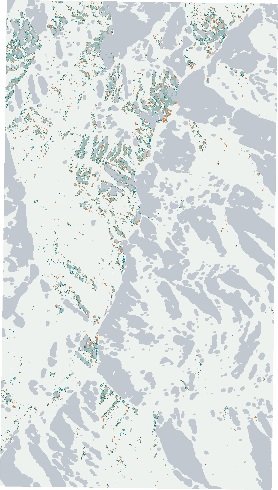
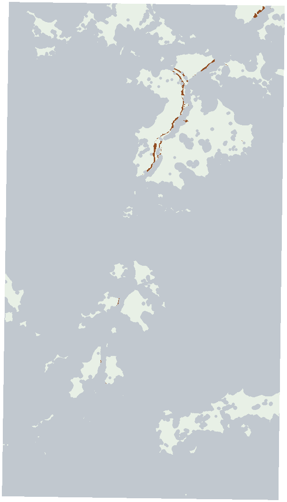

Akash / completed bounded case
Two observation layers.
One inspectable case.
Event 2026-08-26; AOI [85.3, 28.12, 85.42, 28.31]. Historical OSM cutoff 2026-07-27T00:00:00Z.
Engineering execution is complete for the recorded stages. These outputs do not establish damaged roads, safe passage, hospital operation or local flood/debris accuracy. Baseline disconnection is an earlier graph condition, not new flood isolation.
Radar water-state candidates
1,666,783 / 2,480,036 cells assessed; 813,253 unknown. 25,237 new-water candidate cells.
Before 2026-08-16T12:21:53.557589Z; after 2026-08-28T12:21:54.261291Z.

Frozen CPU checkpoint and threshold unchanged. Permanent water and flooding are not separated by the trained binary-water label.
Optical observation support
68,801 / 620,008 native 20 m cells jointly assessed (11.10%). 551,207 unknown; 1,060 surface-change candidates.
Before 2026-08-24T05:11:03.721000Z; after 2026-08-27T05:10:45.885000Z.

Fixed spectral hypotheses. Local debris accuracy and physical road effects are unvalidated; agriculture, riverbank change and vegetation removal can trigger candidates.
The layers retain their separate native grids; no radar-optical pixel fusion or resampling is claimed.
Conditional settlement evidence
Unknown-within-AOI and outside-AOI physical road groups are uncertain in this expanded scenario. Destinations stay fixed. A connection is a graph result, not proof of passability.
- all source: Undetermined 32, No mapped association 20, Baseline disconnected 3
- inside water aoi: Undetermined 14, No mapped association 6, Baseline disconnected 2
- inside extraction context: Undetermined 26, No mapped association 13, Baseline disconnected 2
- incidental outside context: Undetermined 6, No mapped association 7, Baseline disconnected 1
| Historical source point | Graph status | Fixed mapped target ID |
|---|---|---|
| गोठेनnode/269569034 | Undetermined | node/5651307969 |
| गोदामnode/269569475 | Undetermined | node/5651307969 |
| बाहुनडाँडाnode/269569477 | Undetermined | node/5651307969 |
| ठुलो भार्खुnode/269569692 | Undetermined | node/5651307969 |
| दुर्सागाङnode/601106206 | No mapped association | No eligible target |
| लौरिबिनाnode/601521341 | No mapped association | No eligible target |
| गोसाइँकुण्डnode/601521345 | No mapped association | No eligible target |
| चंदन बाडीnode/601594281 | No mapped association | No eligible target |
| रसुवागढीnode/992955542 | Undetermined | node/5651307969 |
| शेर्पागाउँnode/1547068160 | No mapped association | No eligible target |
| फेदीnode/2322395808 | No mapped association | No eligible target |
| 江村node/2524771371 | Undetermined | node/5651307969 |
| 吉甫村node/2524771493 | Baseline disconnected | No eligible target |
| 冲色村node/2524771494 | Undetermined | node/5651307969 |
| 拉比村node/2527671108 | Undetermined | node/8416436734 |
| तातोपानीnode/2554000784 | Undetermined | node/5651307969 |
| नागथलीnode/2554091027 | No mapped association | No eligible target |
| लिङलिङnode/2554587303 | Undetermined | node/5651307969 |
| गोङ्गाङnode/2772174431 | No mapped association | No eligible target |
| ब्रिमडाङnode/2772174479 | Undetermined | node/5651307969 |
| ब्राबलnode/2820552513 | Undetermined | node/3494711409 |
| थाङ्स्यापnode/2824233583 | No mapped association | No eligible target |
| खाङजिमnode/2828873676 | Baseline disconnected | No eligible target |
| 占岗村node/3360413359 | Undetermined | node/8416436734 |
| 巴学曲安node/3360413361 | Undetermined | node/8416436734 |
| 色琼村node/3360413363 | Undetermined | node/8416436734 |
| हाकु बेसीnode/3415530606 | Undetermined | node/5651307969 |
| सानाे भार्खुnode/3415530630 | Undetermined | node/5651307969 |
| सानो हाकुnode/3415536482 | No mapped association | No eligible target |
| डाल्फेडीnode/3415543901 | No mapped association | No eligible target |
| ग्रेnode/3415546447 | Undetermined | node/5651307969 |
| 3478046385node/3478046385 | No mapped association | No eligible target |
| 3491180289node/3491180289 | No mapped association | No eligible target |
| Dalgaunnode/3494541109 | No mapped association | No eligible target |
| 3495699360node/3495699360 | No mapped association | No eligible target |
| 3495750389node/3495750389 | Undetermined | node/5651307969 |
| तेटाङचेटnode/3495750390 | Undetermined | node/5651307969 |
| 3495750391node/3495750391 | No mapped association | No eligible target |
| भ्रजमnode/3495754793 | Undetermined | node/5651307969 |
| ठुलो स्याप्रुnode/3495857671 | Undetermined | node/3494711409 |
| 3510164368node/3510164368 | Undetermined | node/5651307969 |
| 热索node/5086621424 | Undetermined | node/5651307969 |
| पाङलिङnode/5411466640 | No mapped association | No eligible target |
| Pering Kharkanode/9640975461 | No mapped association | No eligible target |
| National Rainbow Trout Research Station, Dhunchenode/10207187270 | Undetermined | node/5651307969 |
| Pasture and Fodder Research Station, Dhunchenode/10207223745 | Undetermined | node/5651307969 |
| पाजुङnode/10833649292 | Undetermined | node/5651307969 |
| भञ्ज्याङnode/11186154604 | Undetermined | node/5651307969 |
| सुर्काnode/11186154605 | Baseline disconnected | No eligible target |
| 郭巴村node/12956735547 | Undetermined | node/8416436734 |
| 本波node/12985865026 | No mapped association | No eligible target |
| 嘎隆node/12985865027 | No mapped association | No eligible target |
| आमाछोदिङ्मोnode/13242877442 | Undetermined | node/5651307969 |
| गोसाइँकुण्डnode/13242877445 | Undetermined | node/5651307969 |
| 萨勒村node/13798689337 | Undetermined | node/8416436734 |
Empty graph witnesses retain null observation fractions. Whole-source, inside-AOI and extraction-context denominators are separate. Point counts are not people or confirmed damage.
Source facts and limitations
Exact computed case facts · Situation evidence note · Current report hashes
Read the source bindings
[
{
"path": "/Users/earther/Desktop/IIT mandi/akash-flood/outputs/fresh-console-2026-10-12/case-9668b96689efb7b0ead66f5c/execution/report/source-and-output-manifest.json",
"bytes": 4565,
"sha256": "fc51a733f96892b45ce3edbfda4de39541ea662210c52685eaf602059b78cf47"
},
{
"path": "/Users/earther/Desktop/IIT mandi/akash-flood/outputs/fresh-console-2026-10-12/case-9668b96689efb7b0ead66f5c/execution/execution-plan.json",
"bytes": 35319,
"sha256": "9f4726f2b75d7f51aa15fc76618790939c4b30ae750aa542d936e35d5ba02a82"
},
{
"path": "/Users/earther/Desktop/IIT mandi/akash-flood/outputs/fresh-console-2026-10-12/case-9668b96689efb7b0ead66f5c/execution/report/report.json",
"bytes": 2858175,
"sha256": "672ba2ee09302fdc118338b4038a1e0b5cfdaae8f284d91c54aed39a15496d86"
},
{
"path": "/Users/earther/Desktop/IIT mandi/akash-flood/outputs/fresh-console-2026-10-12/case-9668b96689efb7b0ead66f5c/execution/observation-access/receipt.json",
"bytes": 4278,
"sha256": "27e4d762613a63a93adc48b7b0c5f12737eb399ac0f0d505f4f722bc945e78a7"
},
{
"path": "/Users/earther/Desktop/IIT mandi/akash-flood/outputs/fresh-console-2026-10-12/case-9668b96689efb7b0ead66f5c/execution/observation-access/original-witness-support.json",
"bytes": 23390033,
"sha256": "5a4773dbcae4907759a947438a89075d01ac01ce08648b3f10cee5f936281ac9"
},
{
"path": "/Users/earther/Desktop/IIT mandi/akash-flood/outputs/fresh-console-2026-10-12/case-9668b96689efb7b0ead66f5c/execution/observation-access/expanded-scenario.json",
"bytes": 26091546,
"sha256": "d43bc5d0aa41f7eab905fdcc1985dd696737105b6d28600f7c813fd6c53848bc"
},
{
"path": "/Users/earther/Desktop/IIT mandi/akash-flood/outputs/fresh-console-2026-10-12/case-9668b96689efb7b0ead66f5c/execution/observation-access/independent-extremes.json",
"bytes": 9728,
"sha256": "f8f970c99bc4080155d72704c1a5860c45f6a33e7b6403a050911bac9d6e1e61"
}
]Contains modified Copernicus Sentinel data 2026. © OpenStreetMap contributors; applicable upstream data terms remain separate from original-code MIT. No reference labels, model fitting or outcome-guided threshold changes occurred in this report.